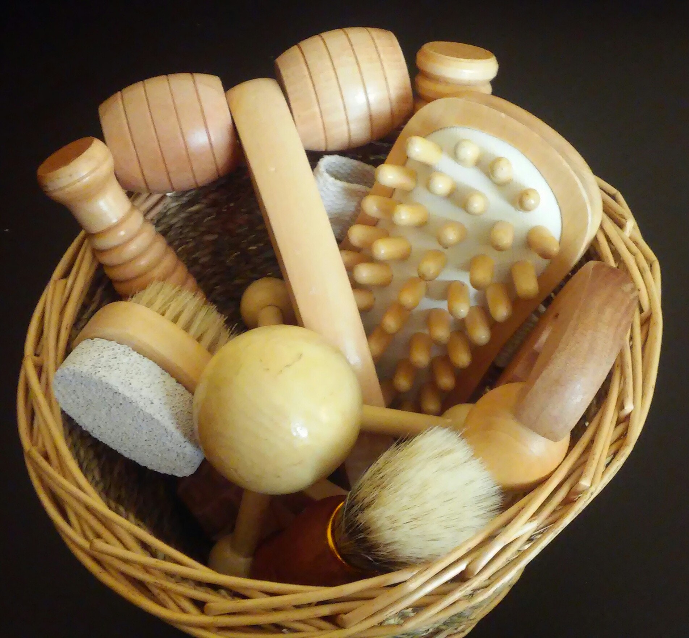

Know more about our Packages Here
Deep Tissue Massage -- $23 (Express- 30 Minutes) $30 (Long Duration- 40 Minutes)
It attempts to treat strains and sport injuries also useful for joint pain , Know More
Ayurvedic Massage -- $30 (Express- 30 Minutes) $35 (Long Duration- 50 Minutes)
It focuses on relaxation, stress relief and releasing emotional blockages, Know More
Swedish Massage -- $34 (Express- 30 Minutes) $38 (Long Duration- 40 Minutes)
Extremely relieving with smooth and long swings in beat, Know More
Thai Massage -- $26(Express- 30 Minutes) $32 (Long Duration- 45 Minutes)
Encourages in giving help to the muscles and viably levels out the arrangement of body framework, Know More
Balinese Massage -- $18(Express- 30 Minutes) $23 (Long Duration- 50 Minutes)
It's a Blend of an assortment of massage treatment procedures. It is firmly identified with Ayurvedic massage treatment ideas, the old Indian massage treatment for add up to body wellbeing and wellness, Know More
Balinese Massage-- $18(Express- 30 Minutes) $23 (Long Duration- 50 Minutes)
It's a Blend of an assortment of massage treatment procedures. It is firmly identified with Ayurvedic massage treatment ideas, the old Indian massage treatment for add up to body wellbeing and wellness, Know More
Indian Head Massage-- $10(Express)
It is a treatment based on old Ayurvedic techniques involving work on the head, neck, shoulders and face, Know More
South Indian Massage -- $15 (Express-- 30 Minutes) $25 (Long Duration- 60 Minutes)
Involves Usage of essential oils originating from Southern India, Know More
Indian Foot Massage-- $12(Express)
It is a treatment based on old Ayurvedic techniques involving work on the knees and feet, Know More
Indian Full Body Massage -- $40(Express-- 30 Minutes) $50 (Long Duration- 90 Minutes)
Includes Massage work on whole body, Know More